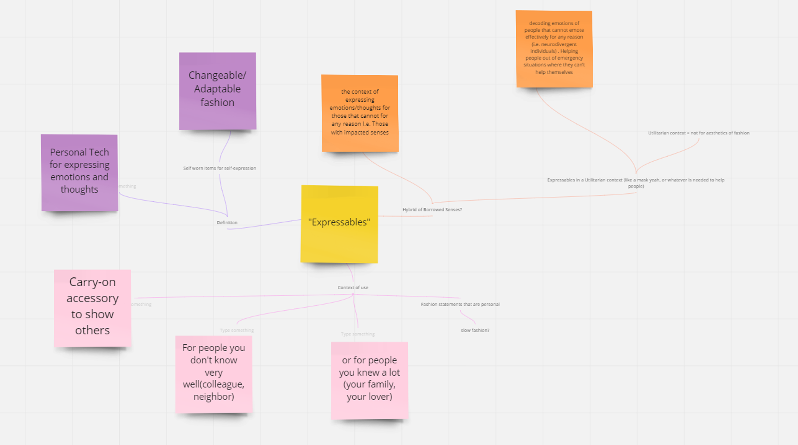
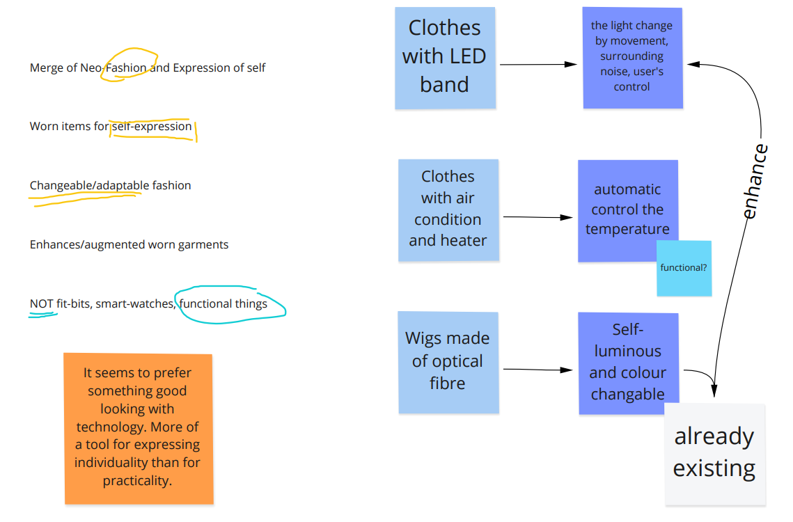
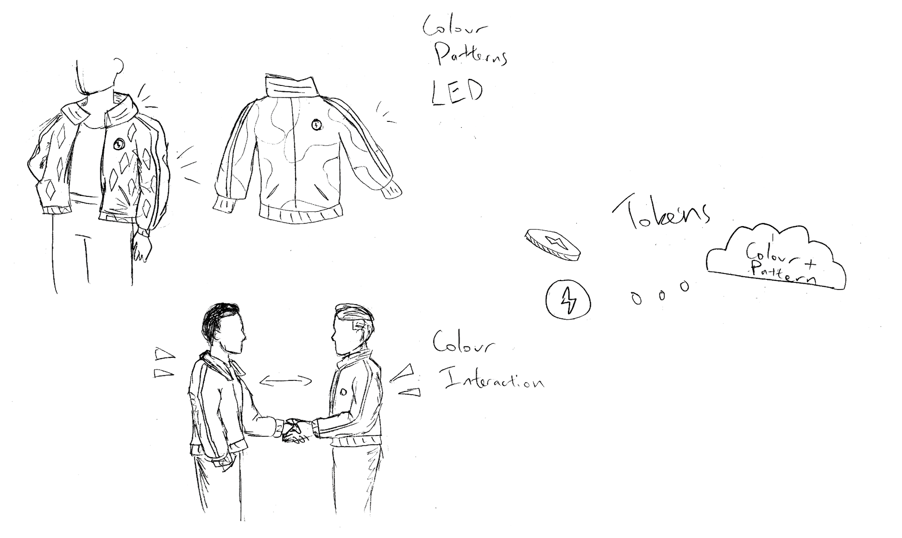
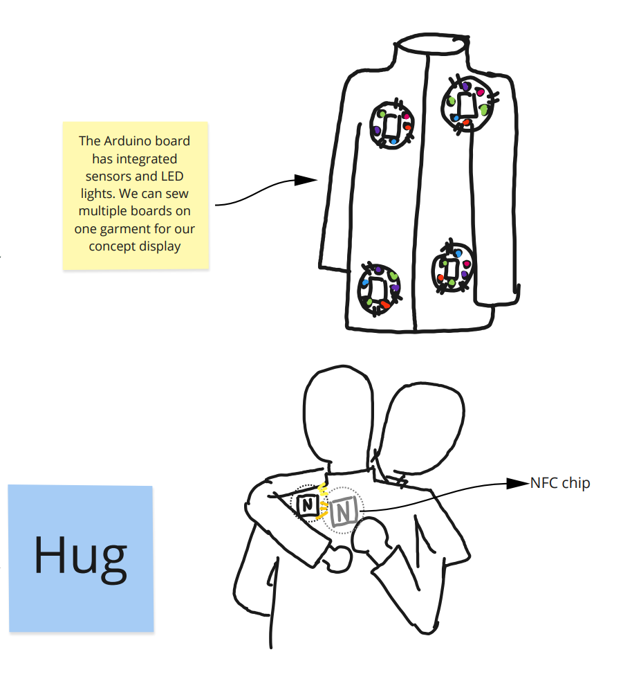
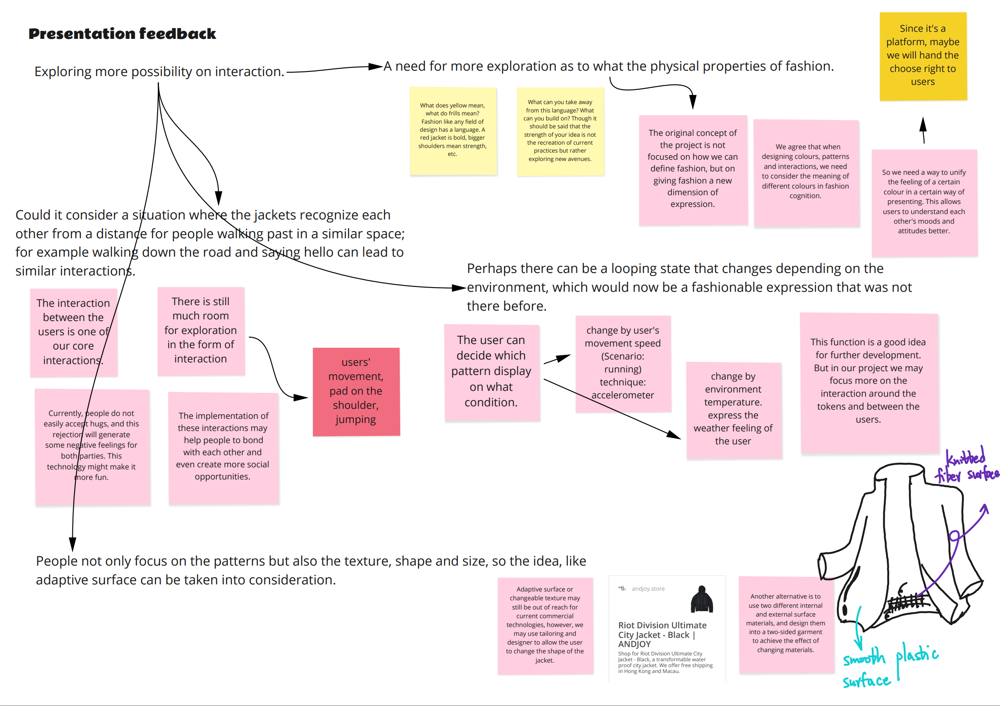
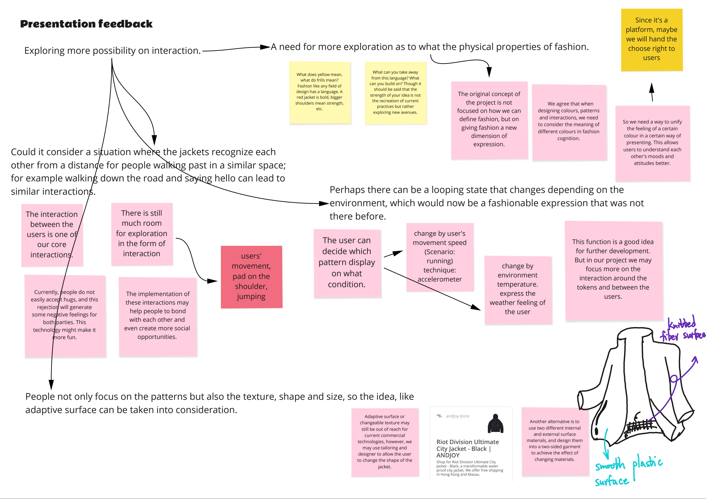
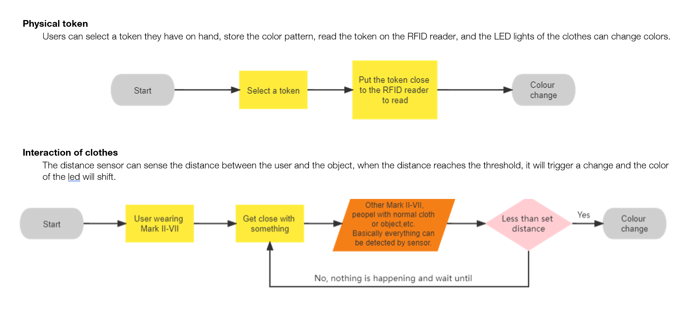
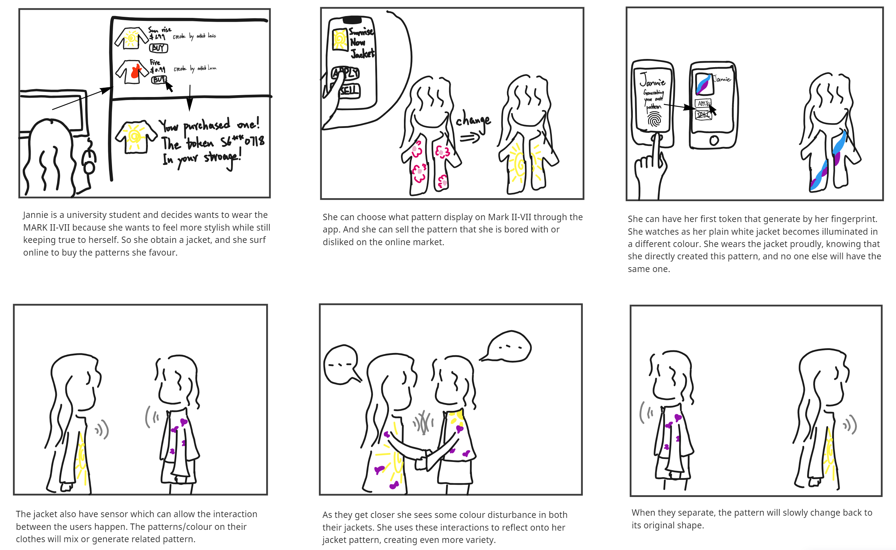
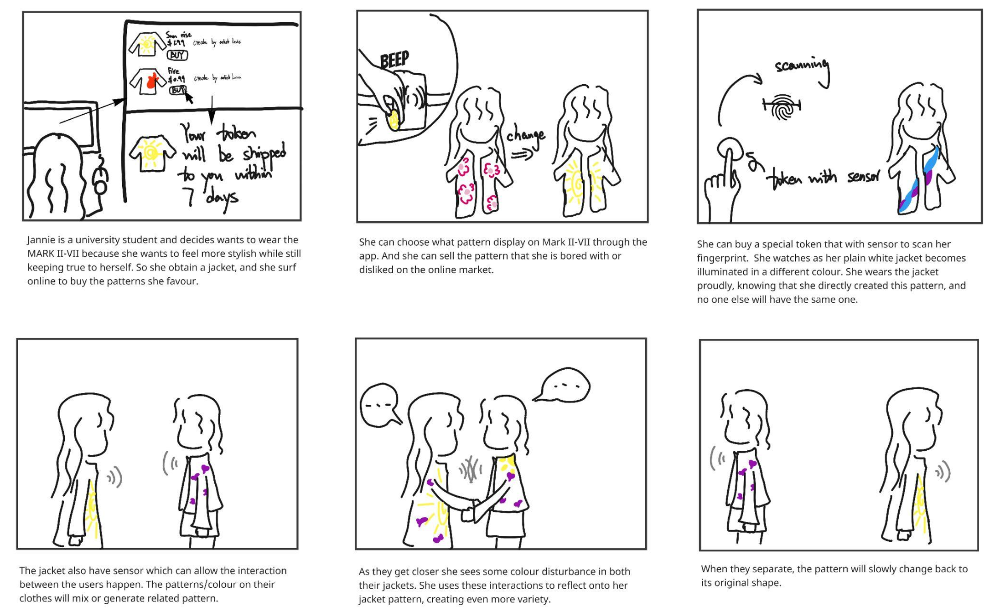
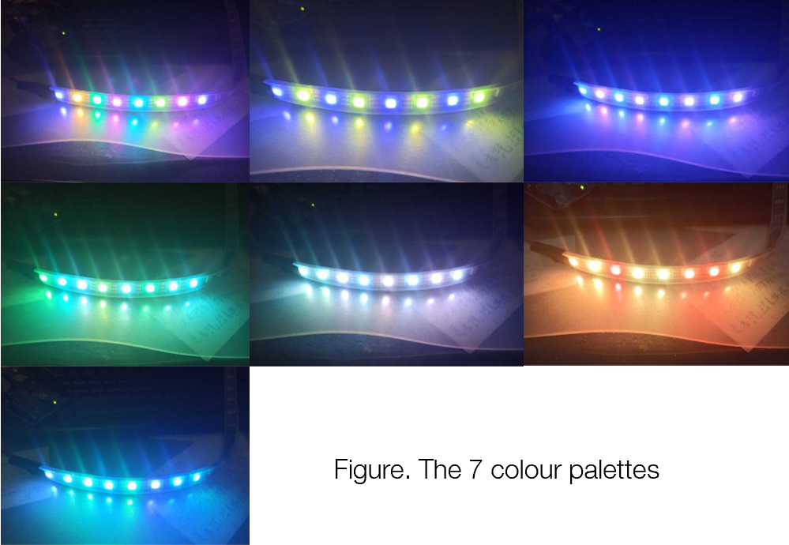

Mark Ⅱ-Ⅶ
Mark Ⅱ-Ⅶ uses dynamic light to allow people to enjoy self-expression, bring interaction to the clothing and promoting a new level of individualism in fashion, .
The essential interaction of Mark Ⅱ-Ⅶ has three parts, changing appearance, RFID token, and interaction between users.
Tool used: Miro, Slack, Adruino IDE, Adobe Photoshop, Adobe Illustrator
What I did: User Experience Design, RFID system develop, Graphic design for supporting material
Duration: 21 March - 3 June 2022 as part of Course Physical Computing & Interaction Design Studio at UQ
*Due to the COVID-19 lockdown, the project was completed in a Hybrid mode.
The background
Our team, Flash Studio, designed under the theme Expressable, a subtheme under The Future Everyday: novel interactions for near-future technologies and definition of the subtheme Expressable as:- Merge of Neo-Fashion and Expressions of Self
- Worn items for self-expression
- Changeable/adaptable fashion
- Enhances / augmented worn garments
- NOT fit-bits, smart-watches, functional things
The literature review reveals that many works explored fashion design in the
context of interpersonal
and
intrapersonal expression: Civilisation has advanced from treating clothing as merely
functional piece of
defence against the elements, to intricate items that also provide humans identification, modesty,
status
and adornment. With this development, fashion became the first “Social
Interface”
- a means to reflect the
self.
Additionally, clothing also affects the wearer's moods and attitudes. The works revealed
that clothing
serves as an important form of communication, influencing others and the self.
As fashion is considered a “social interface”, integrating technology could open up new modes of interaction
with such interface. In fact, there have been a lot of attempts in this field.
Ideation
After completing the background research, we conducted several brainstorming sessions to ideate and refine the concept. We first discussed which interaction medium to perform the interaction. Temperature, sound and touch etc., were senses we thought of as ways to interact. The light was our final thought, as it is a universal medium that is striking, light as a communication medium can impact the space where the user is located, and the users can passively express their personalities.   Based on the social properties of clothing, We hoped to evolve beyond the passive interaction of clothing into an active interconnection between the wearer, observer and garment. Therefore, we considered interpersonal interactions.In
a sketching session, we thought of distance sensors
or other
short-distance connection techniques that would trigger pattern or colour changes through conditions
such as
movement or touch when two wearers meet. To help build stronger social connections between users.
Inspired by existing products, technology enables direct user inputs to affect clothing cryptically and
personally, reflecting the garment's monetary value.


Relate the premium value of clothing and the importance of uniqueness in
self-expression, it connect us to a bigger picture.The booming NFT industry and the related trading
market allowed new insights into enforcing uniqueness of digital things. Since Mark Ⅱ-Ⅶ is
a non-static interactive garment, treating individual patterns like NFTs can introduce peer-to-peer
clothing purchases - a new
form of social experience. It was an exciting idea.
 

After refining and perfecting the idea, we identified three main functions of the MarkII-VII:
In addition to being technically easier to implement, the concept of physical tokens is also more relevant
to the current physical transactions in the apparel market, providing a more familiar experience for
consumers and helping with the future promotion of the project.
- Changing of appearance
- Tradable token associated with one piece of unique design
- Interactions occur between jacket wearers
Target Users
While fashion is a universal form of self-expression regardless of demographic, socially-conscious young adults born in 1995-2010 would be the ideal match for the Mark Ⅱ-Ⅶ. Generation Z is an emerging demographic currently taking up 41% of the population, meaning technologies for this demographic will certainly see wide-use and large-scale social effects. Market research has also shown that this generation values self-expression more than ever and prefers sustainable and ethical products.
As the first generation to live in a world of ubiquitous technology, generation Z embraces a strong
sense of
self-identity, especially online. Consistency and customizability come to mind when observing their
preferences for platforms and technology (Bewicke, 2021).
The Mark Ⅱ-Ⅶ is highly suitable for generation Z because it aligns with their core values and
desires.
This technology would be highly appealing due to its customizability and uniqueness, that off-the-rack
clothes cannot provide. It also has other side appeals, such as sustainability and ethical production.
Interaction Plan
Storyboard (Original version-NFT)
Storyboard (Modified version-Physical Token)
Implementation
Following our functional design, Mark Ⅱ-Ⅶ can be broken down into its primary components:- Light Source: We had chosen NeoPixels for our light source as the most practical and available resource. We experimented with different light diffusion behaviours and colour algorithms to create pleasing and meaningful combinations.
- Physical Token: The physical token had to be a component that could generate and store a unique colour combination. Based on workshop resources and teaching team advice, we removed the token trading system and opted for a physical RFID token scheme. Each 'seed' is unique, which coincides with our concept of non-fungible tokens and is, therefore, well suited for our technology application.
- Proximity Sensing: Interpersonal interaction was a barrier. Bluetooth and ESP were plausible solutions, but the difficulty was how sensors could detect other Mark Ⅱ-Ⅶs without interference. In many conversations with the teaching team, we found that wireless communication was greatly beyond our prototype scope. Additionally, with universal proximity sensors, the boundaries of interaction will no longer be limited to Mark Ⅱ-Ⅶ users. It can be the interaction with the surrounding. The sensor solution helps open up more opportunities for interaction.
User Test
The main purpose of the user testing was to justify the types of colour palettes used in the jacket was reasonable and capable of mobilising the user's emotional changes. We expect to be able to determine if the physical experience met our expectations and vision. Even with great resources on colour psychology, we believe user testing is worthwhile.
We set up a dark room, illuminated the room with a single colour (or series of colours in our colour
palettes), and invited testers to express the thoughts and emotions they experienced. We used these
results
to select well-liked colour combinations that expressed interesting emotions.

Graphic Design & Branding
I also worked as the graphic designer in the team, completed supporting material (post and brochure) for the project and built the project's visual identity.*All third-party art resources used in the project have been licensed.


High-fidelity Prototype
.jpg)
.jpg)
.jpg)
 View my course portfolio website
The above is the design and development process of the Mark Ⅱ-Ⅶ, welcome to click the links to
explore more about Mark Ⅱ-Ⅶ, or please feel free to browse my other works :)
View my course portfolio website
The above is the design and development process of the Mark Ⅱ-Ⅶ, welcome to click the links to
explore more about Mark Ⅱ-Ⅶ, or please feel free to browse my other works :)
Reference
Bewicke, H. (2021). Gen Z Consumer Behavior: What You Need to Know | Talon.One. Talon.one. Retrieved 23 March 2022, from gen-z-consumer-behavior-what-you-need-to-know .
Images of UQ IxD Exhibit @ Andrew Liveris 2022 from Eventphotography